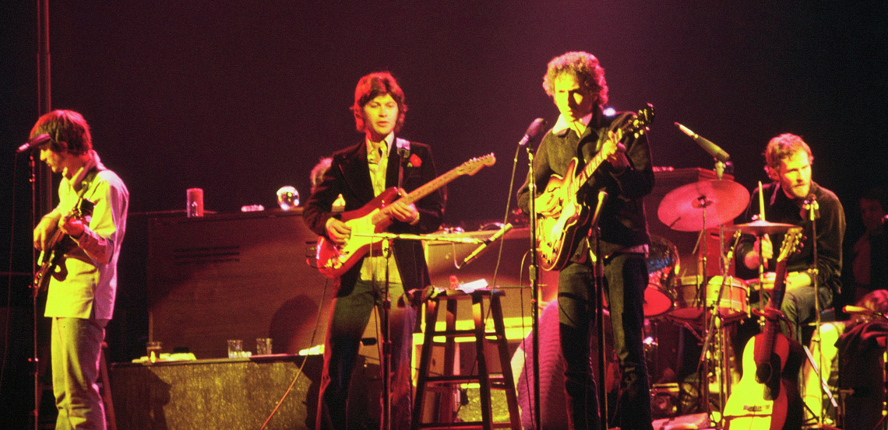

Bob Dylan, Premio Nobel de Literatura
La concesión del premio Nobel de literatura de este año a Robert A. Zimmerman, Bob Dylan (Duluth, EE. UU., 1941) está generando una cierta polémica —como era previsible, por otra parte. Nadie discute que Dylan es excepcional en su arte, pero se generan dudas acerca de que su arte pueda ser calificado de literatura.
Salvador Climent

Desde el punto de vista del rock y la música popular, que es el de este artículo, Bob Dylan cambió para siempre la naturaleza de la letra de las canciones. Hasta Bob Dylan eran artefactos de consumo, básicamente variaciones sobre las emociones del amor adolescente y otros temas susceptibles de impacto comercial, compuestas por escritores profesionales a sueldo de las productoras. Bob Dylan cambia las reglas del juego.
El mito de la canción protesta
Hay un gran malentendido popular sobre Bob Dylan. Es víctima del cliché de la canción protesta, como John Lennon lo es del cliché de paz, amor y flores que supuestamente representa Imagine. Pero Dylan no ha sido nunca un agitador: cuenta historias o expone estados de conciencia.
Sin lugar a dudas, en su segundo y tercer elepés la preocupación social es la clave de algunas canciones que siguen la veta politizada de su maestro Woody Guthrie; son las más conocidas y las que le confieren repercusión mundial ( Blowin’ In The Wind, With God on Our Side, A Hard Rain’s A-Gonna Fall, Masters of War, The Times They Are a-Changin’) pero ni siquiera son mayoría en estos dos álbumes, donde, por cierto, ya encontramos las primeras grandes muestras de la sensibilidad que sí que definirá su obra ( Don’t Think Twice It’s Allright, Girl from the North Country). De hecho, Dylan renegó explícitamente ser un abanderado de la canción protesta en la estrepitosa electrificación que se produce a partir de los álbumes Bringing It All Back Home (Columbia, 1965) y Highway 61 Revisited (Columbia, 1965), que le valió el anatema de los seguidores con conciencia social, quienes daban por hecho que habían encontrado un nuevo profeta.
En el resto de sus cincuenta años de carrera la conciencia social tan solo la encontramos en algunas crónicas de personajes reales ( Hurricane, Ballad of Hollis Brown, The Lonesome Death of Hatie Carroll, Blind Willie McTell, George Jackson), en las que sobre todo narra la vida de negros tratados con injusticia. Sí, más allá de sus dos o tres primeros años de carrera, Bob Dylan demuestra tener conciencia política, especialmente preocupación por la discriminación racial. Sin embargo, no protesta —en este tipo de canciones hace crónicas, en algunos casos sorprendentemente asépticas y distantes. El resultado es que, con estas excepciones, la práctica totalidad del cancionero de Dylan no tiene intención política ni social.